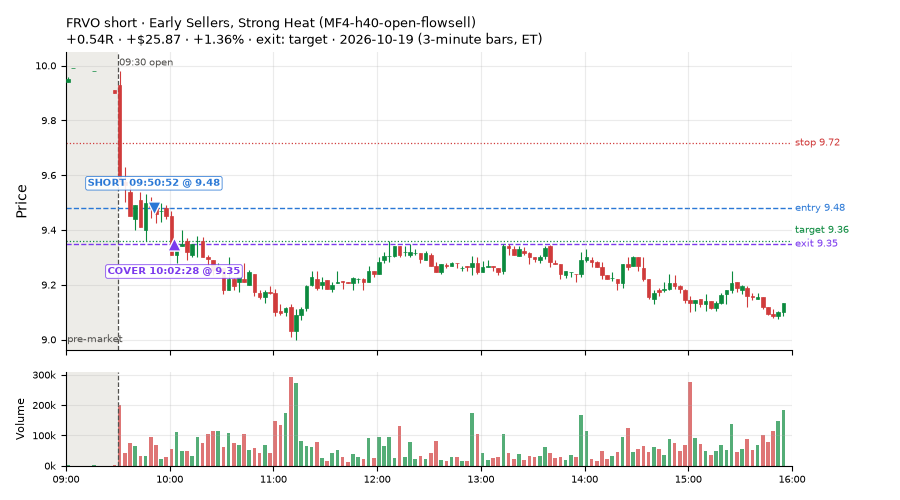
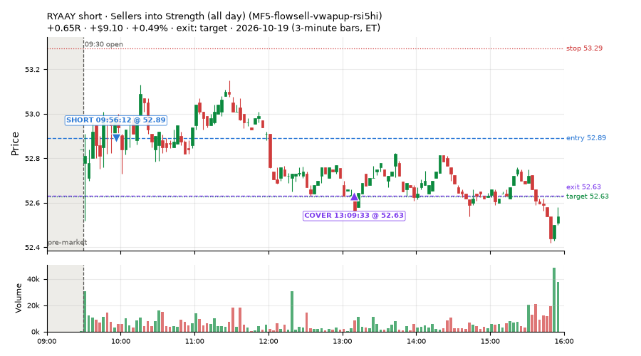
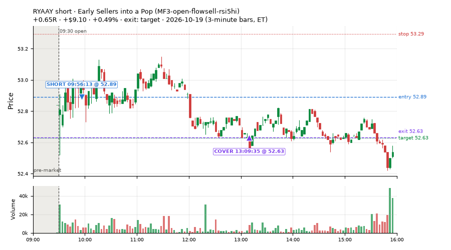
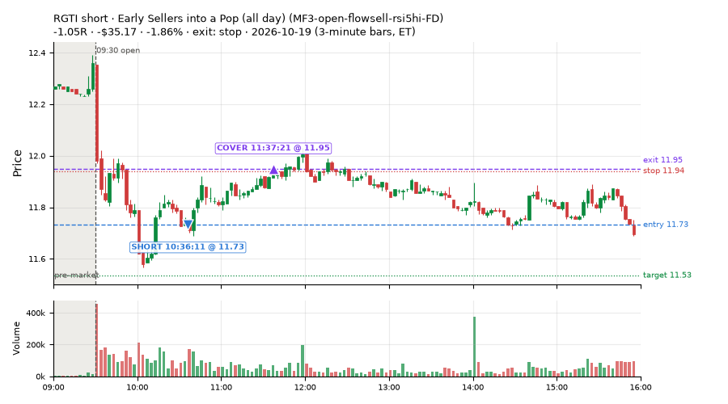
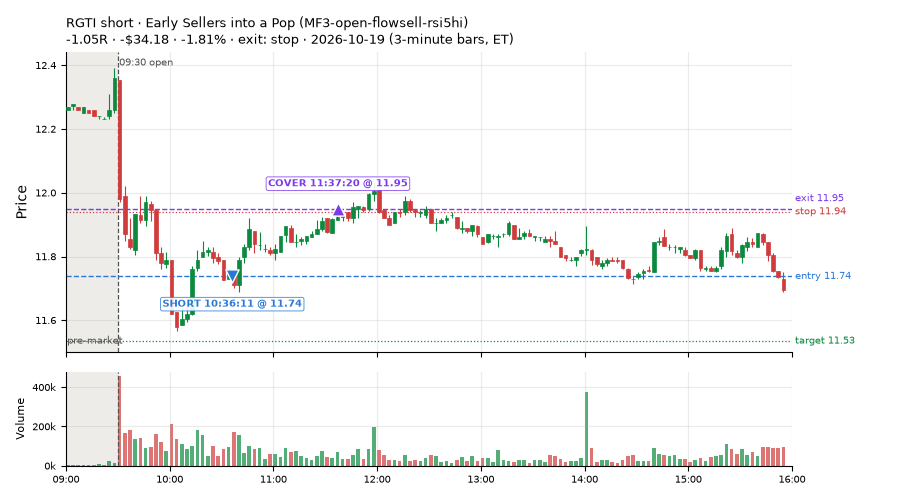
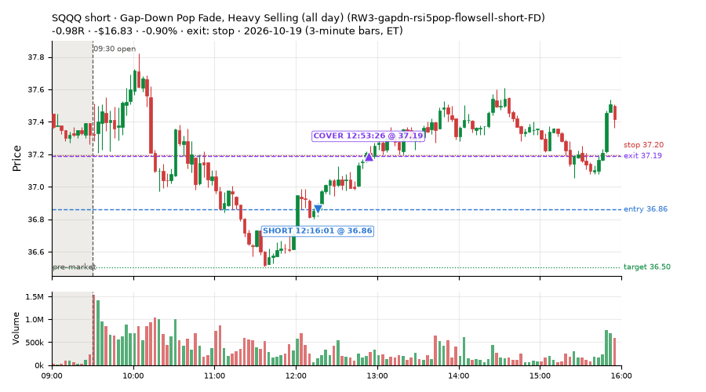
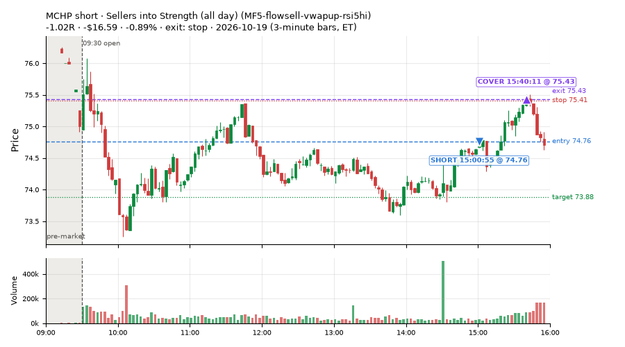

37 trades · win rate 49% · P/L $-49.30
PROBATION: no live setup has passed both locked test periods. 10 owner-directed setups added 2026-10-08 (MarcoFlow top 5 + 5 new), untested live. RW6G1 (RW6 + VWAP band guard) added 2026-10-09, probation.

| Symbol | Setup | Side | In | Out | Entry | Exit | Exit reason | % gained | P/L |
|---|---|---|---|---|---|---|---|---|---|
| FRVO | Early Sellers, Strong Heat (MF4-h40-open-flowsell) | short | 09:50 | 10:02 | 9.48 | 9.35 | target | +1.36% | $25.87 |
| RYAAY | Sellers into Strength (all day) (MF5-flowsell-vwapup-rsi5hi) | short | 09:56 | 13:09 | 52.89 | 52.63 | target | +0.49% | $9.10 |
| RYAAY | Early Sellers into a Pop (MF3-open-flowsell-rsi5hi) | short | 09:56 | 13:09 | 52.89 | 52.63 | target | +0.49% | $9.10 |
| Symbol | Setup | Side | In | Out | Entry | Exit | Exit reason | % lost | P/L |
|---|---|---|---|---|---|---|---|---|---|
| RGTI | MF3-open-flowsell-rsi5hi-FD | short | 10:36 | 11:37 | 11.73 | 11.95 | stop | -1.86% | $-35.17 |
| RGTI | MF3-open-flowsell-rsi5hi | short | 10:36 | 11:37 | 11.74 | 11.95 | stop | -1.81% | $-34.18 |
| SQQQ | RW3-gapdn-rsi5pop-flowsell-short-FD | short | 12:16 | 12:53 | 36.86 | 37.19 | stop | -0.90% | $-16.83 |
| MCHP | MF5-flowsell-vwapup-rsi5hi | short | 15:00 | 15:40 | 74.76 | 75.43 | stop | -0.89% | $-16.59 |
| MCHP | MF3-open-flowsell-rsi5hi-FD | short | 15:00 | 15:40 | 74.78 | 75.42 | stop | -0.86% | $-16.01 |







Signal to fill: median 2s, 90th percentile 3s (37 trades). Bars close each minute; the order follows the bar close.
Best excursion (MFE): median 0.70R; worst (MAE) median 0.84R. 11% of trades never got +0.25R in our favour; 3 reached +1R and still closed at or below 0.
| Symbol | Setup | Best R | Worst R | Closed R |
|---|---|---|---|---|
| DBMF | MF1-945-flowsell-vwapup | +2.49 | -1.00 | -1.00 |
| DBMF | MF3-open-flowsell-rsi5hi-FD | +1.11 | -1.00 | -1.11 |
| DBMF | MF3-open-flowsell-rsi5hi | +1.11 | -1.00 | -1.11 |
| VOOG | MF1-945-flowsell-vwapup | +0.90 | -1.19 | -1.15 |
| MCHP | MF3-open-flowsell-rsi5hi-FD | +0.77 | -1.07 | -1.01 |
| Entry time | Trades | Win | Avg R | P/L |
|---|---|---|---|---|
| 09:50-10:30 | 19 | 47% | -0.21 | $32.27 |
| 10:30-11:30 | 5 | 40% | -0.18 | $-58.99 |
| 11:30-13:00 | 5 | 40% | -0.17 | $-20.48 |
| 13:00-14:00 | 3 | 100% | +1.00 | $26.88 |
| 14:00-16:00 | 5 | 40% | -0.42 | $-28.98 |
| Setup | Trades | Win | Avg R | Adj R (net of SPY) | P/L |
|---|---|---|---|---|---|
| Early Sellers Above VWAP (MF1-945-flowsell-vwapup) owner-directed; holdouts once: Sep-Oct +0.169R n86, Apr-Jun -0.050R n429 | 4.0 | 25% | -0.35 | -0.07 | $-2.84 |
| Early Sellers into a Pop (MF3-open-flowsell-rsi5hi) owner-directed; holdouts once: Sep-Oct -0.059R n170, Apr-Jun -0.034R n729 | 5.0 | 20% | -0.71 | -0.36 | $-45.17 |
| Early Sellers into a Pop (all day) (MF3-open-flowsell-rsi5hi-FD) | 13.0 | 54% | -0.17 | -0.08 | $-31.91 |
| Early Sellers, Strong Heat (MF4-h40-open-flowsell) owner-directed; holdouts once: Sep-Oct -0.117R n147, Apr-Jun -0.017R n735 | 3.0 | 100% | +0.45 | +0.16 | $32.24 |
| Sellers into Strength (all day) (MF5-flowsell-vwapup-rsi5hi) owner-directed; holdouts once: Sep-Oct -0.001R n264, Apr-Jun -0.010R n1199 | 3.0 | 67% | +0.14 | -0.04 | $-1.63 |
| Afternoon VWAP Reclaim Fade (NS4-pm-vwap-reclaim-oversold-short) owner-directed; holdouts once: Sep-Oct -0.086R n49, Apr-Jun -0.080R n342 | 1.0 | 0% | -0.16 | -0.29 | $-1.35 |
| Big Loser Flush Buy (NS5-sma50-flush-oversold-long) owner-directed; holdouts once: Sep-Oct -0.008R n73, Apr-Jun +0.002R n231 | 1.0 | 0% | -0.06 | +0.01 | $-1.61 |
| Gap-Down Pop Fade, Heavy Selling (all day) (RW3-gapdn-rsi5pop-flowsell-short-FD) | 5.0 | 40% | -0.15 | -0.30 | $-14.43 |
| Gap-Down Pop Fade (all day) (RW5-heat30-flowsell-rsi5pop-gapdn-short-FD) | 2.0 | 100% | +0.81 | +0.85 | $17.40 |
Market direction (SPY, beta 1) accounted for $-20.74 of today's $-49.30; the rest ($-28.56) came from the setups themselves. Avg R net of SPY: -0.08 (incl. a hedge leg's cost; report only).
12 setups live today. Today: 51 signals, 37 taken, 11 lost because another setup held the symbol (22%). Since 2026-10-06 (10 sessions): 548 signals, 348 taken, 50 lost to other setups (9%). Peak open positions today 15 of 160 slots. Earnings blackout removed 367 symbols before scanning.
Simulated playing time (not live): 198 what-if trades of signals not taken, avg -0.05R, 52% winners; of them 50 lost to another setup (avg -0.07R).
Silent: intraday_momentum · Crowded out: MF3-open-flowsell-rsi5hi, MF5-flowsell-vwapup-rsi5hi · Starved: NS4-pm-vwap-reclaim-oversold-short
| Prio | Setup | Today sig / taken | Sessions | Signals / taken / trades | Taken/day | Expected/day | Lost to other setups | Lost to (setup n) | Top skip reasons | SIMULATED: not-taken n / avg R / win | Verdict |
|---|---|---|---|---|---|---|---|---|---|---|---|
| 1 | Gap-Down Pop Fade (all day) RW5-heat30-flowsell-rsi5pop-gapdn-short-FD | 3 / 2 | 2 | 6 / 4 / 4 | 2.00 | 12.79 | 0 | – | spread / quote / size 2 | 2 / +0.62R / 100% | watch 2.00 entries/day vs ~12.79 expected |
| 2 | Gap-Down Pop Fade, Heavy Selling (all day) RW3-gapdn-rsi5pop-flowsell-short-FD | 5 / 5 | 2 | 10 / 8 / 8 | 4.00 | 13.59 | 0 | – | not shortable / shorts off 1, spread / quote / size 1 | 2 / +0.38R / 50% | ok 20.0 entries/week |
| 3 | Early Sellers into a Pop (all day) MF3-open-flowsell-rsi5hi-FD | 13 / 13 | 2 | 27 / 25 / 25 | 12.50 | 24.16 | 0 | – | spread / quote / size 2 | 2 / -0.20R / 50% | ok 62.5 entries/week |
| 4 | Big Gainer Fade with VWAP Band Guard RW6G1-ns2-up3-vwap2sd-short | 0 / 0 | 7 | 5 / 3 / 3 | 0.43 | 0.40 | 0 | – | not shortable / shorts off 1, spread / quote / size 1 | 2 / +0.22R / 50% | slow 2.1 entries/week; ~28 weeks to 60 trades |
| 5 | Big Gainer Dip-and-Pop NS1-rsidip-rsi5pop-long | 0 / 0 | 8 | 7 / 6 / 6 | 0.75 | 0.92 | 0 | – | spread / quote / size 1 | 1 / +0.32R / 100% | slow 3.8 entries/week; ~16 weeks to 60 trades |
| 6 | Early Sellers, Mid-High RSI MF2-open-rsimidhi-flowsell | 1 / 0 | 8 | 9 / 4 / 4 | 0.50 | 1.30 | 0 | – | spread / quote / size 3, not shortable / shorts off 2 | 5 / -0.48R / 20% | slow 2.5 entries/week; ~24 weeks to 60 trades |
| 7 | Big Loser Flush Buy NS5-sma50-flush-oversold-long | 1 / 1 | 8 | 12 / 10 / 10 | 1.25 | 2.41 | 0 | – | spread / quote / size 2 | 2 / +0.85R / 100% | slow 6.2 entries/week; ~10 weeks to 60 trades |
| 8 | Afternoon VWAP Reclaim Fade NS4-pm-vwap-reclaim-oversold-short | 1 / 1 | 8 | 8 / 5 / 5 | 0.62 | 3.05 | 0 | – | not shortable / shorts off 3 | 3 / -1.16R / 0% | starved 0.62 entries/day vs ~3.05 expected |
| 9 | Early Sellers Above VWAP MF1-945-flowsell-vwapup | 6 / 4 | 8 | 33 / 16 / 16 | 2.00 | 5.33 | 2 | MF4-h40-open-flowsell 1, RW5-heat30-flowsell-rsi5pop-gapdn-short-FD 1, RW3-gapdn-rsi5pop-flowsell-short-FD 1 | spread / quote / size 13, symbol held by another setup 2, not shortable / shorts off 2 | 17 / -0.28R / 35% | slow 10.0 entries/week; ~6 weeks to 60 trades |
| 10 | Early Sellers, Strong Heat MF4-h40-open-flowsell | 4 / 3 | 8 | 37 / 21 / 21 | 2.62 | 7.24 | 5 | MF3-open-flowsell-rsi5hi 3, MF3-open-flowsell-rsi5hi-FD 3, MF5-flowsell-vwapup-rsi5hi 2 | not shortable / shorts off 6, symbol held by another setup 5, spread / quote / size 5 | 16 / -0.02R / 62% | slow 13.1 entries/week; ~5 weeks to 60 trades |
| 11 | Early Sellers into a Pop MF3-open-flowsell-rsi5hi | 8 / 5 | 8 | 50 / 29 / 29 | 3.62 | 9.19 | 13 | MF4-h40-open-flowsell 8, MF1-945-flowsell-vwapup 5, MF3-open-flowsell-rsi5hi-FD 3 | symbol held by another setup 13, spread / quote / size 5, not shortable / shorts off 3 | 21 / -0.25R / 48% | crowded-out 13 of 50 signals (26%) lost to setups already holding the symbol |
| 12 | Sellers into Strength (all day) MF5-flowsell-vwapup-rsi5hi | 9 / 3 | 8 | 74 / 31 / 31 | 3.88 | 15.47 | 28 | MF3-open-flowsell-rsi5hi 15, MF1-945-flowsell-vwapup 10, MF3-open-flowsell-rsi5hi-FD 10 | symbol held by another setup 28, spread / quote / size 10, not shortable / shorts off 3 | 43 / -0.22R / 46% | crowded-out 28 of 74 signals (38%) lost to setups already holding the symbol |
Every trade is attached as a CSV you can open and edit in Excel or Google Sheets. Live page: https://misiti15.github.io/MCF/live/